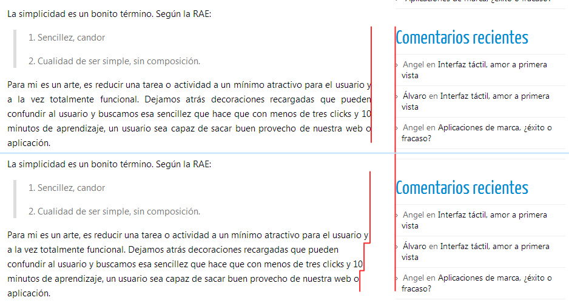
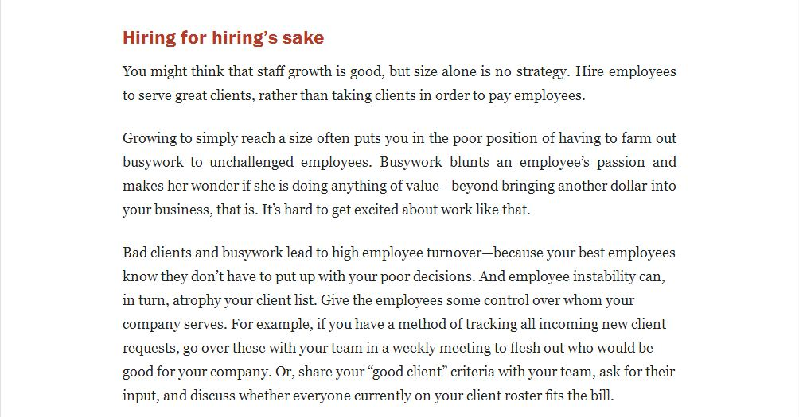
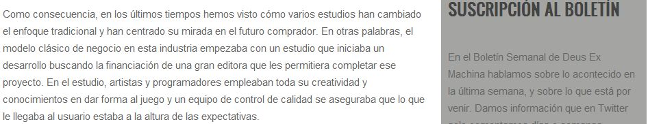
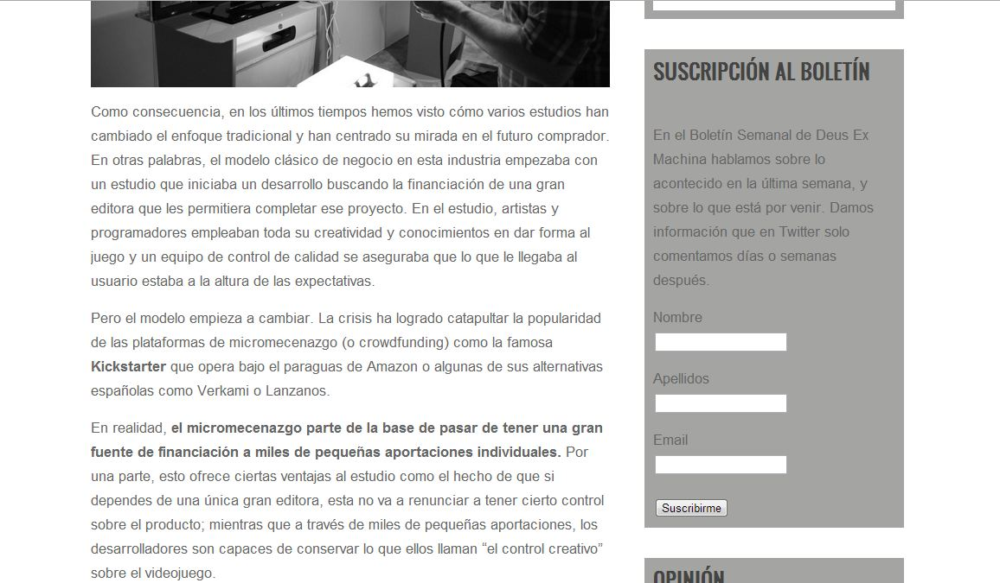

¿Es bueno justificar los textos?
Siempre que realizamos alguna modificación en el texto de nuestras webs, debemos de tener en nuestra mente el objetivo de mejorar la calidad de lectura y comprensión de este. Facilitar la lectura de nuestros textos ayuda a conseguir que los usuarios sigan leyéndolos. En el caso de un artículo, esto es primordial.
¿Por qué justificar?
Justificar consiste en alinear un párrafo de texto de forma que quede totalmente encuadrado, es decir, que todas las líneas tengan exactamente el mismo ancho. ¿Qué ventajas nos aporta justificar un texto?. Las dos ventajas más importantes es que da un nivel mayor de orden y crea una línea divisoria imaginaria en el texto.
La primera ventaja me atrevería a decir que es a gusto de cada uno. No es una ventaja importante, aportar un grado de orden casi nunca es necesario pues al diseñar una web dividimos cada sección y la destacamos. No hace falta volver a recalcar esto. Pero si os gusta el orden será una gran ventaja para vosotros.
El problemas es que muchas veces esta división no existe y ahí es dónde entra la segunda ventaja, que es la que para mí decide si utilizar o no justificado.
También hay desventajas, es mucho más sencillo seguir la línea por la que vas leyendo en un texto sin justificar debido a la diferente longitud de las líneas.
¿Secciones difusas? Mejor justificar
Como hemos dicho, justificar el texto crea una línea divisoria imaginaria. Si tenemos un texto y a la derecha otro texto de otra temática y no hay separación real entre los dos (mismo fondo, sin bordes, sin margen amplio...), justificar es una gran opción. Podemos poner como ejemplo este mismo blog:

Línea divisoria imaginaria al justificar
En este caso la división no está bien marcada y justificar el texto ayuda al usuario a delimitar el artículo de la barra de la derecha que contiene información adicional.
En otros casos no hay diferencia entre utilizar o no textos justificados. Miremos la web de A list Apart, como vemos, los textos de artículos no tienen nada a la derecha por lo que no hace falta marcar la división. La justificación o no del texto queda en manos del gusto del diseñador porque en este caso no mejora la lectura.

Texto justificado y sin justificar (A list apart)
La regla de oro
Solo hay una situación en la que nunca debemos de utilizar justificados de texto:
Si el texto a justificar tiene menos de 50 caracteres por línea, nunca se debe de justificar. En este caso se producen amplios espacios que interrumpen la lectura. Hay otros factores que influyen a la hora de tomar decisiones de si justificar o no, como el tamaño de letra. Si esta es demasiado pequeña se pueden producir espacios incómodos para la lectura. Aunque esto último depende de la situación del texto, la primera regla se cumple siempre.
Caso de estudio: deusexmachina.es
@laux_es ¿Qué opinas del uso del "justificado" en los textos?
— Mith (@OldMith) 26 de abril de 2013
Este artículo nació de este tweet y ahora vamos a analizar esta web sobre videojuegos: www.deusexmachina.es.
Actualmente los textos están justificados en algunas entradas, ¿es necesario?. La división con la parte derecha es bien marcada, pues las cajas tienen un fondo muy distinguido del fondo del texto del artículo.
Es cierto que si alineamos el texto a la izquierda en algunos párrafos se difumina un poco la división:

Deus Ex Machina, texto sin justificar
Esto no es un problema de tamaño de letra, la casualidad es que la utilización de palabras muy largas provoca esos espacios en blanco (como veis cada caso es un mundo).
La justificación en este caso, en mi opinión es opcional. No es algo necesario y estos espacios no afectan a todos los párrafos por igual. Veo más importante para mejorar la lectura el separar un poco las cajas de la derecha para marcar esa división del artículo y subir un punto el tamaño de la letra (font-size: 1.1em), siempre hablando de la versión de escritorio.
Así quedaría con estos cambios, y como veis el justificado aquí no es estrictamente necesario, ya es a gusto del consumidor ;).

Deus Ex Machina, cambios en el texto